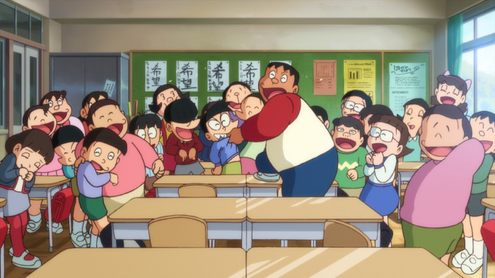
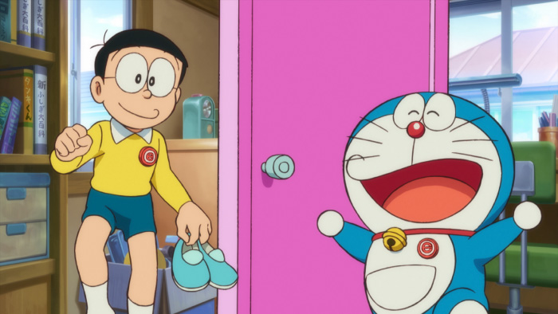
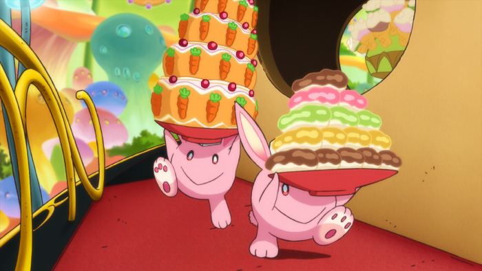
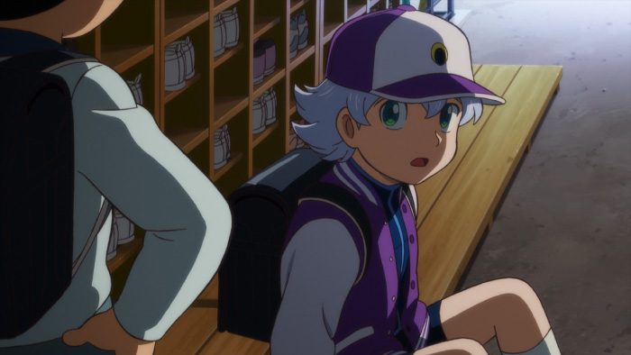
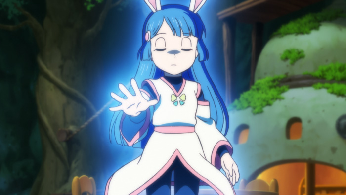
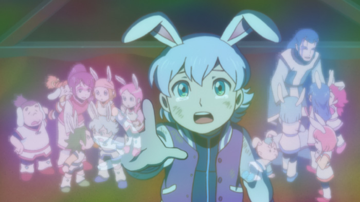
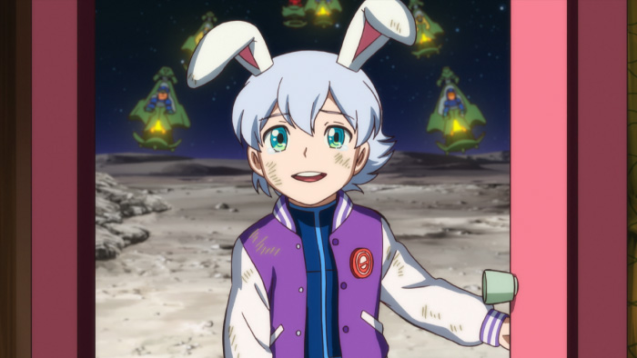
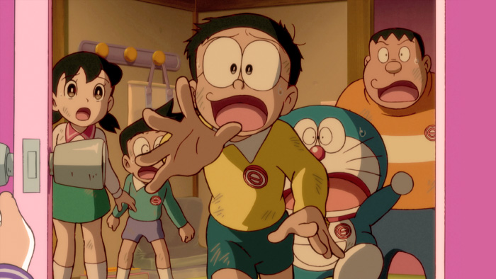

Murid pindahan yang misterius.
Dan apa kebenaran yang tersembunyi di balik bulan...!?


Bayangan keputihan yang ditangkap oleh tangki eksplorasi permukaan bulan telah menjadi berita besar.
Nobita bersikeras bahwa itu adalah kelinci dengan bulan, tetapi semua orang menertawakannya.
Jadi, menggunakan gadget rahasia Doraemon, (Issue Obscenity Club Member's Badge),
saya memutuskan untuk membuat kerajaan kelinci di sisi belakang bulan.


Suatu hari, seorang bocah lelaki aneh dan misterius, Shounen Luka, pindah ke sekolah lain
dan memutuskan untuk pergi ke Kerajaan Kelinci bersama Nobita dan teman-temannya. Di sana,
Nobita kebetulan bertemu dengan anak-anak dengan kekuatan misterius bernama Guzen Espal.


Sebuah pesawat ruang angkasa misterius Uchusen muncul di depan Doraemon dan Espal,yang telah
menjadi teman baik. Espar semua ditangkap, dan Luka juga ditangkap
untuk membantu Doraemon dan yang lainnya!


Nobita dan yang lainnya
Bisakah kamu membantu Luka!?